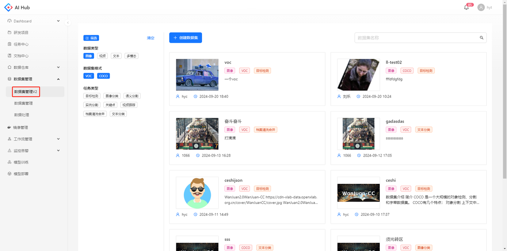
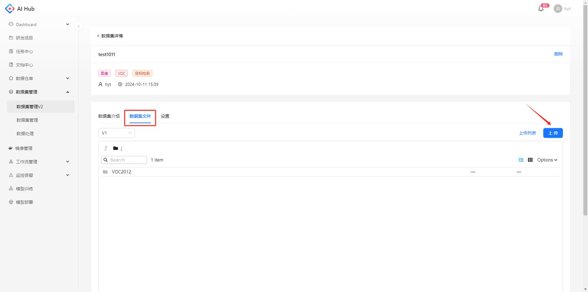
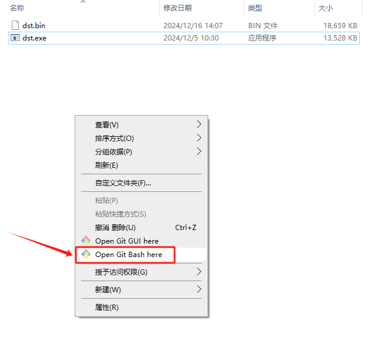

数据集管理V2 使用手册
数据集列表
点击导航栏的数据集管理V2可以看到当前的数据集列表，左侧可以通过不同类别的标签筛选数据集

创建数据集
点击创建数据集，跳转至创建数据集的页面

填写数据集的必填字段，数据集描述支持填写markdown格式的readme。数据类型、数据集格式、任务类型为数据集标签，用于对数据集进行快速分类和筛选。

上传数据
点击数据集卡片，跳转至该数据集的详情页

在数据集文件模块，点击上传按钮，跳转至上传数据的页面

支持本地上传和服务器路径两种方式，每次上传后会生成一个版本

本地上传
服务器路径
点击上传列表，跳转至列表页

可以看到当前数据集所有版本的上传状态、数据大小、文件数量等信息

-
版本：由平台自动生成，从V1开始自增
-
上传方式：本地/服务器路径
-
上传内容：本地则展示上传至s3的压缩包路径，服务器路径则展示填写的具体地址
-
数据大小：所有文件大小的总和
-
文件数量：除文件夹以外的所有文件数量
-
状态：等待中、上传中、成功、失败
继承历史版本
上传数据时，选择要继承的历史版本，在该版本的基础上增加数据

创建成功后，查看该版本的目录结构，在根目录可以看到一个新的文件夹名称为随机字符串，该文件夹下是新上传数据的原始目录结构

查看数据集
在数据集介绍支持查看创建数据集时在描述填写的readme信息

在数据集文件支持切换版本，以列表或缩略图的模式查看数据集的原始目录结构


单击文件，支持预览图像、文本、视频等多种格式的文件内容


编辑数据集
在数据集详情页的设置模块，支持修改创建数据集时填写的信息，点击保存后修改生效

分享数据集
若数据集为私有，创建人可以通过添加协作者将数据集分享给相关人员查看。

协作者在 [分享给我的] 筛选项下可以看到该数据集

下载数据集
提供客户端下载工具，命令行参数如下：
| 参数 | 解释 | 是否必须 | 示例 | 备注 |
|---|---|---|---|---|
| n | 数据集版本名称， | 是 | 人脸检测2023/v2 | 格式：{dataset_naem}/V{datset_verson_nmum} |
| o | 下载本地目录 | 是 | ./dataset2023 | |
| w | 并发下载数 | 否 | 20 | 默认是20 |
| s | 服务地址 | 否 | http://192.168.13.160:30021 | 生产环境，编译时指定到生成环境 |
Linux
下载后将文件移至所需服务器的路径下

命令行示例：

Windows
下载后在文件所在目录下打开Git Bash命令行工具

命令行示例：